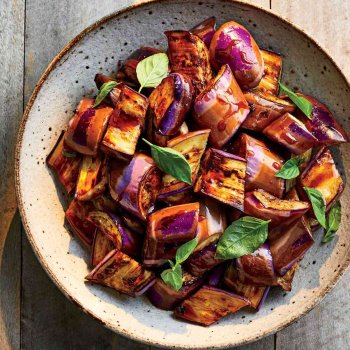
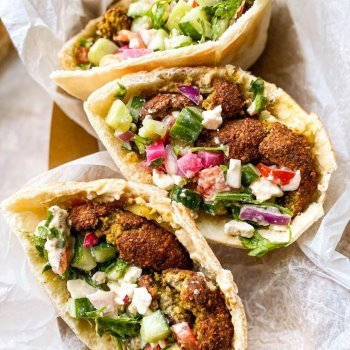

Hearths near 92104
12 Open Hearths within 10 miles.
View
Filters0
Filtered by





No Hearths match these filters
Try a wider distance or another cuisine, or turn off "Open Hearths only".
92104
Pins show each Hearth’s neighborhood. The exact address is shared once your order is accepted.
No Hearths match these filters
Try a wider distance or another cuisine, or turn off “Open Hearths only”.